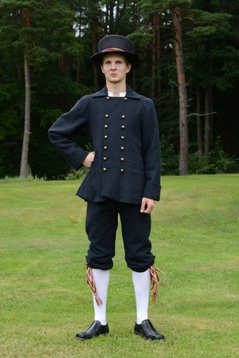

Kui sinu rahvariided on aja jooksul väsinud ja vajavad värskendamist või on kandmisel kannatada saanud ning nõuvad remonti siis võta ühendust !
FIE Ülle Murula tegutseb alates 2009. aastast. Meie peamiseks tegevusalaks on rahvasrõivaste valmistamine kõikidele vanusegruppidele, mis põhinevad Eesti Rahva Muuseumi arhiivis olevatel rõivastel ja etnograafilise arhiivi kirjeldustel. Tellida saab nii terveid komplekte kui ka üksikuid esemeid.
